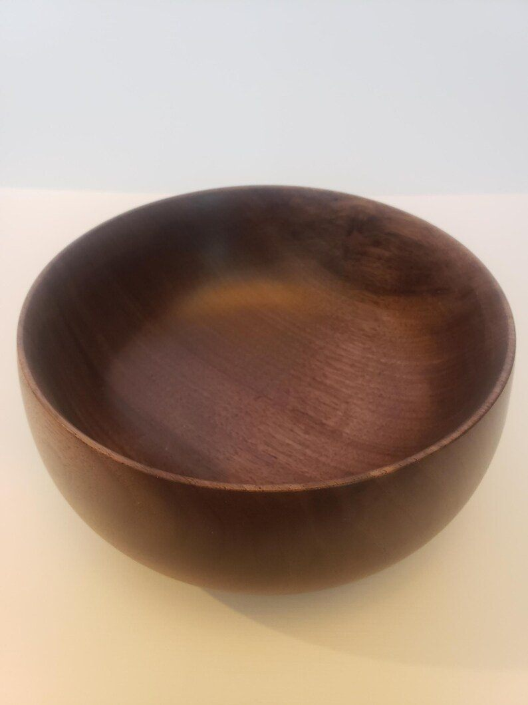
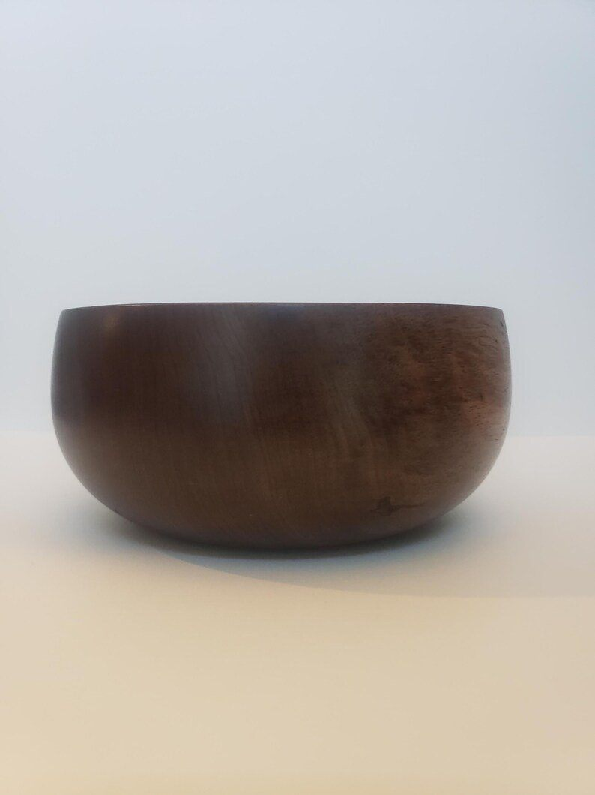
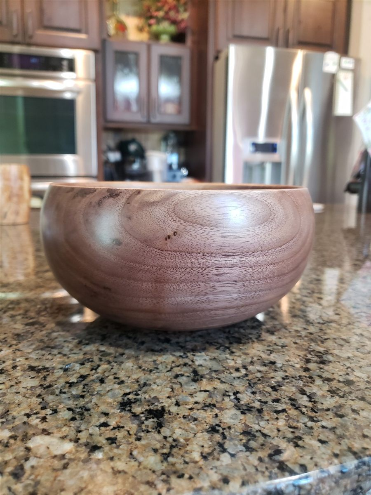
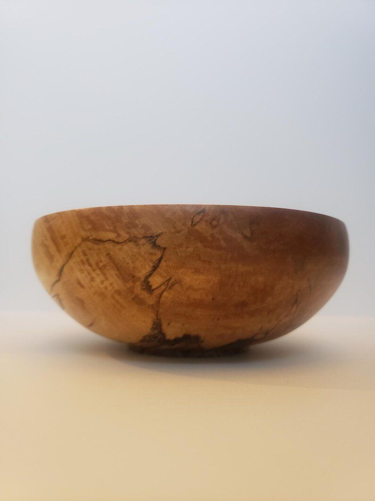
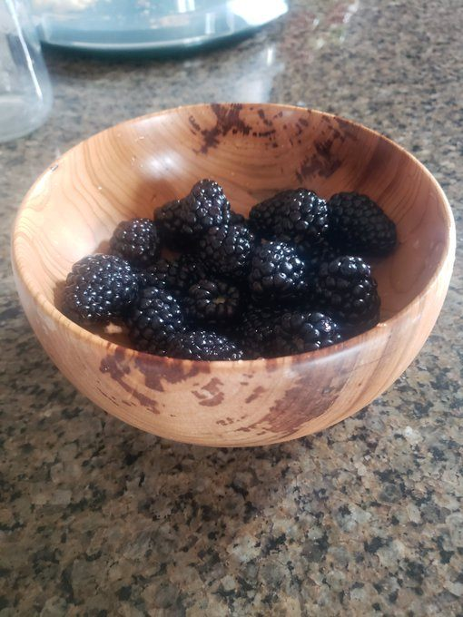
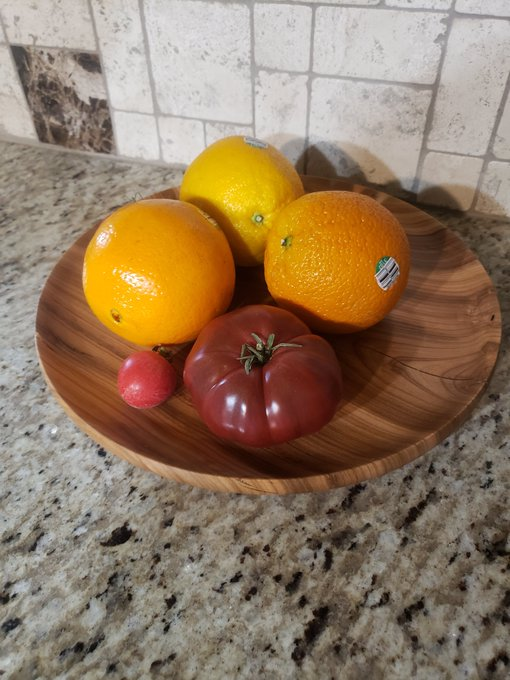
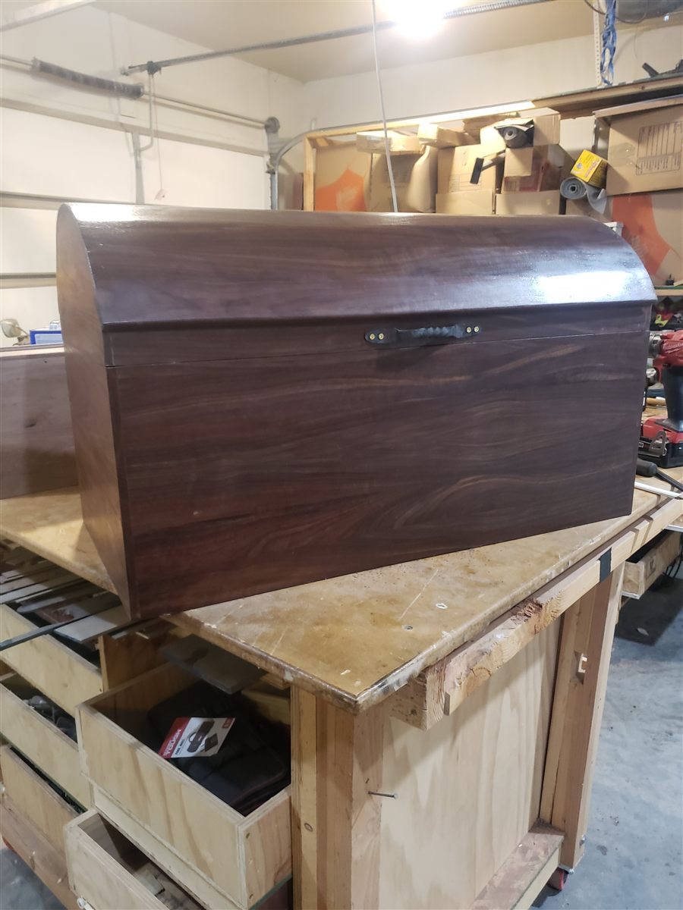
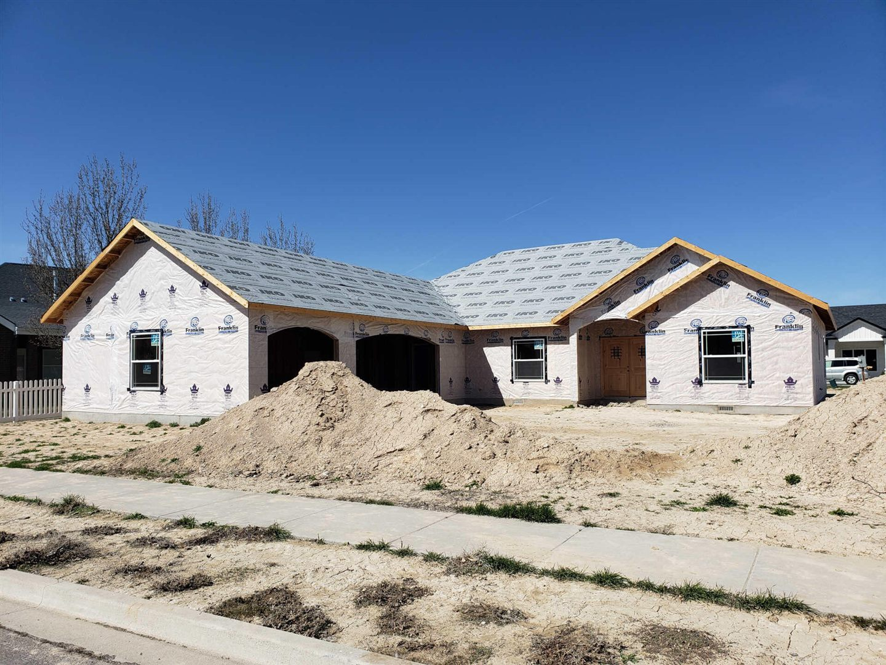

Walnut bowl
More views of this piece


The person behind the software
I’m based in Twin Falls, Idaho. Before focusing on software, I operated a construction company. Farming, woodworking, and hands-on projects are also part of my life.
That experience shapes the questions I ask: How does this work in practice? Where does it get held up? What would make it easier for the person doing the job? That is where I start when building software, too.
A look beyond the screenHands-on background / Farm & workshop
Fields, livestock, and a tractor rebuild. A few glimpses of the other work that keeps me learning, fixing, and figuring things out.
Hands-on background / Woodwork
Making things from wood is another part of how I work: understanding the material, shaping a form, and refining the details.







Selected pieces from my woodworking portfolio. Select a photo for a larger view.
Construction / Past work
Before focusing on software, I operated a construction company in the Magic Valley. These past projects show the building experience I bring to understanding real work.

Residential / Twin Falls
Framing a custom home in the Magic Valley.
I no longer operate the construction company. This portfolio is a record of my experience with planning, coordination, and hands-on building.
Talk about your business workflow